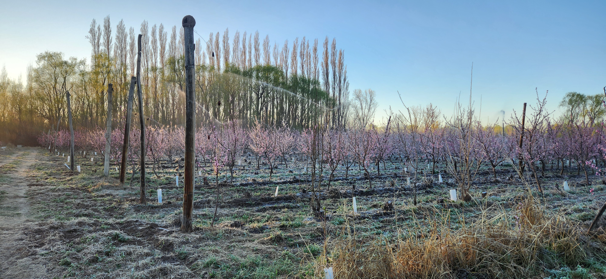
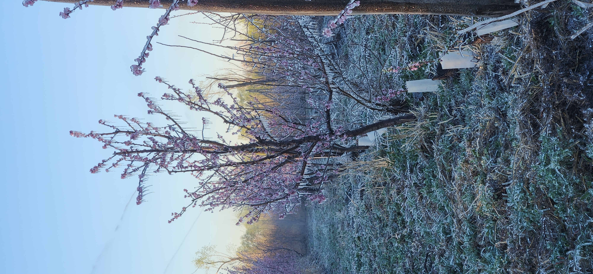
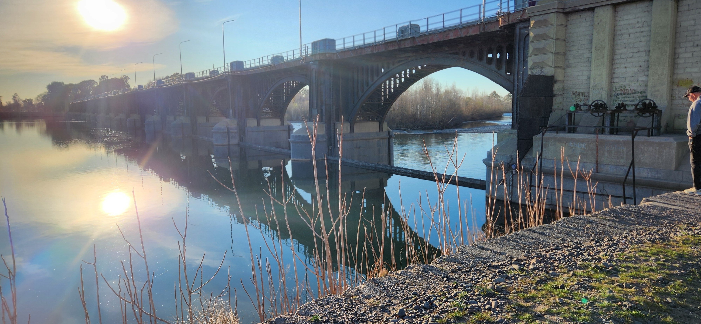
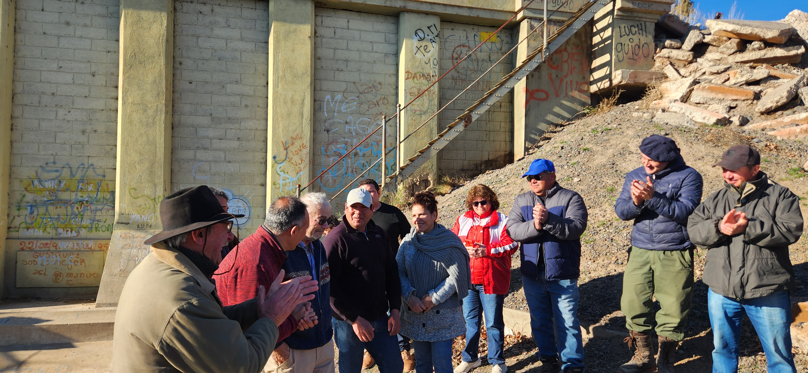
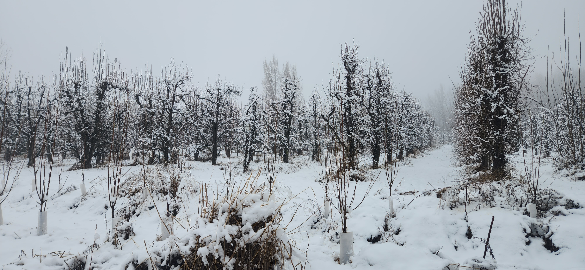
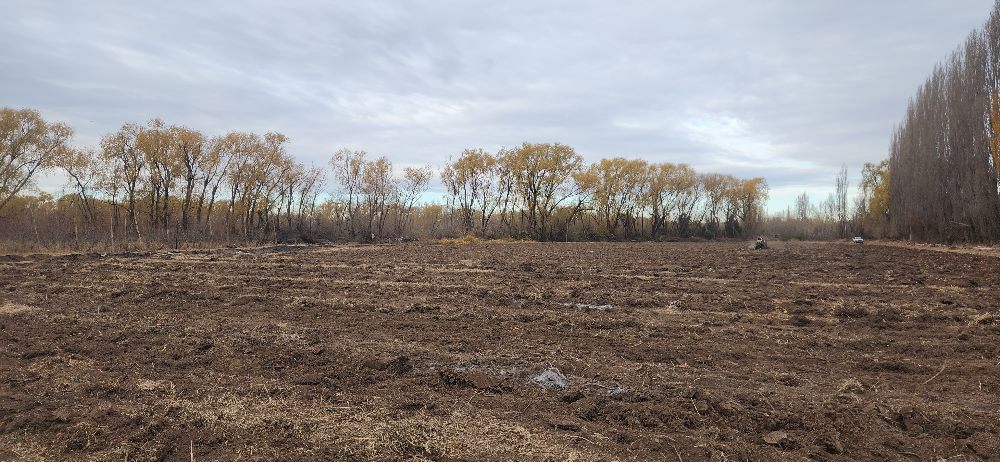
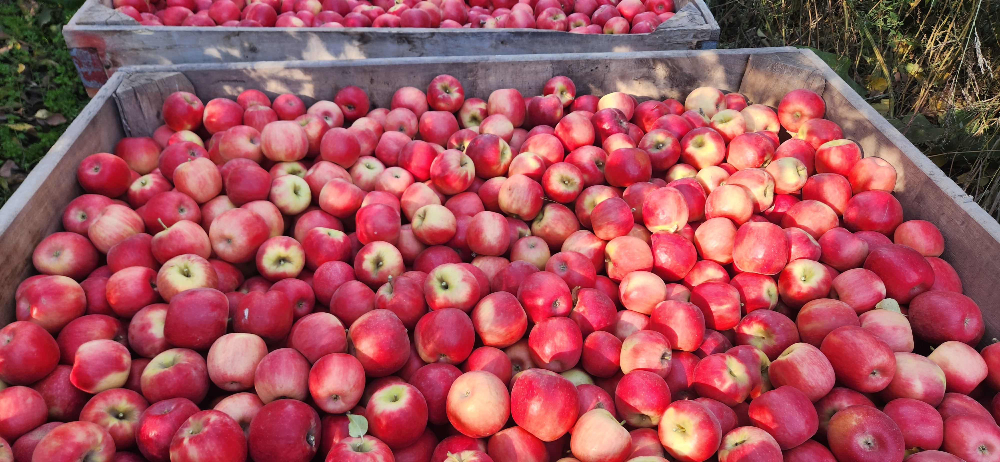
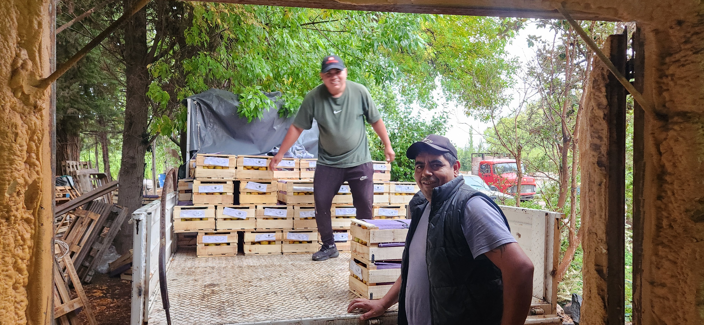
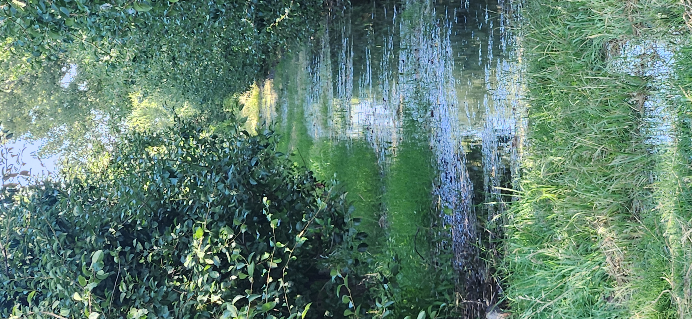

Bienvenidos a Chacra Vieja
En Chacra Vieja producimos fruta de calidad bajo estándares de buenas prácticas agrícolas.
Establecimientos
Nuestra actividad se desarrolla en cinco establecimientos distribuidos entre las calles rurales N°5 y N°2 abarcando 42 hectáreas sobre las que se producen manzanas, peras, duraznos, ciruelas y pelones. Tres de los cinco establecimeintos que conforman Chacra Vieja, han sido desarrollados por las distintas generaciones de la Familia Almohalla, siendo Chacra Vieja el establecimiento mas antiguo del emprendimiento y la base principal de operaciones.
Productos
En los inicios, por los años 40, emprendimiento comenzó con producción de manzanas de distintas variedades para ir sumando posteriormente peras ciruelas duraznos y pelones. En la actualidad, la superficie implantada esta representada por 15 hectareas de manzanos, 7 hectáreas de frutales de carozo y 20 hectareas de peras. A partir del año 2024 se comenzó una renovación de montes siendo que a la fecha alrededor de 4 hectáreas son plantaciones de entre 1 y 2 años.
Galería de Fotos









Contacto
Chacra Vieja
Centenario, Neuquén
Argentina